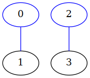
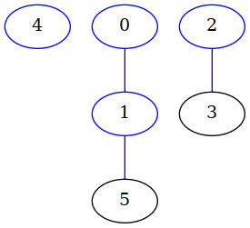
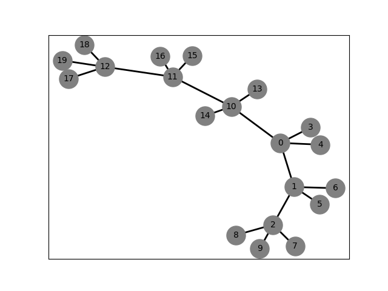
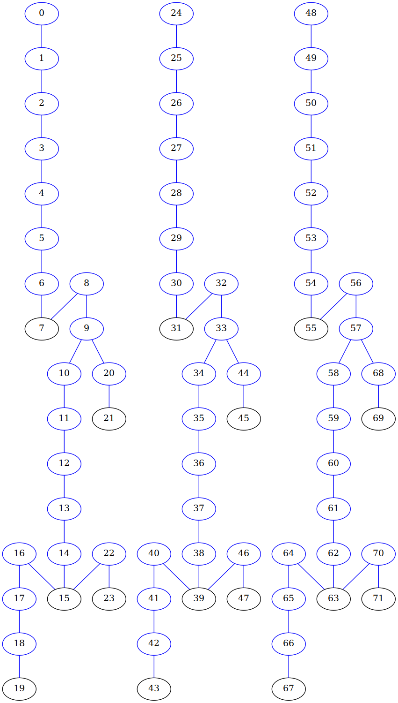

Module polyanagro.Topology
This is a derived class of MolecularGraph. It specializes the molecular graph to a topology.
Expand source code
"""
This is a derived class of MolecularGraph. It specializes the molecular graph to a topology.
"""
import polyanagro as pag
import numpy as np
import MDAnalysis
import datetime
"""
Reference 2: "Automatic Perception of Organic Molecules Based on Essential Structural Information"
Yuan Zhao, Tiejun Cheng, and Renxiao Wang*
J. Chem. Inf. Model. 2007, 47, 1379-1385
Reference 3: "A New Algorithm for Exhaustive Ring Perception in a Molecular Graph"
Th. Hanser, Ph. Jauffret, and G. Kaufmann
J. Chem. Inf. Comput. Sci. 1996, 36, 1146-1152
"""
class Topology(pag.MolecularGraph):
__slots__ = ['_orderbonds', '_nringsCauchy', '_elements', '_charge', '_mass', '_topologyfile', "logger"]
# #########################################################################
def __init__(self, natoms=-1, listbonds = None, undirected=True, logger=None):
"""
Topology constructor, Topology objects rarely are direcly build by users.
Segment class initializes the Topology of the system
Parameters:
* ``natoms`` (integer , default = -1): Number of atoms in the topology
* ``listbonds`` (list, default = None): List of bonds betweem atoms
* ``undirected`` (boolean, default = True): False for directed graph or True for undirected graph.
(see warning in `polyanagro.MolecularGraph.MolecularGraph`)
* ``logger`` (Logger instance): Log the results
Attributes:
* ``self._orderbonds`` --> A numpy array (natomsxnatoms) to set up the bond order between two atoms
* ``self._elements`` --> A list
* ``self._charge`` --> Atomic charge list
* ``self._mass`` --> Atomic mass list
* ``self._nringsCauchy`` -->
* ``self._topologyfile`` --> Topology file
* ``self.logger`` (Logger instance): Log the results
Examples
----------
>>> self._topology = Topology(natoms=4, listbonds=[(0,1), (2,3)])
.. image:: ../../figures/topo01_test06.png
"""
super().__init__(nvert=natoms, listbonds=listbonds, undirected=undirected)
if not logger is None:
self.logger = logger
else:
self.logger = None
self._orderbonds = np.zeros([self._natoms, self._natoms], dtype=float)
self._elements = []
self._charge = []
self._mass = []
self._nringsCauchy = 0
self._topologyfile = ""
# #########################################################################
def __copy__(self):
t = Topology()
t._natoms = self._natoms
t._nringsCauchy = self._nringsCauchy
t._undirected = self._undirected
t._bonds = self._bonds[:]
t._cycles = self._cycles[:]
t._nmols = self._nmols[:]
t._graphdict = self._graphdict.copy()
t._orderbonds = self._orderbonds.copy()
t._mass = self._mass[:]
t._elements = self._elements[:]
t._charge = self._charge[:]
t._topologyfile = self._topologyfile
t.logger = self.logger
return t
# #########################################################################
def __eq__(self, other):
"""
Overrides equal method
``Parameters``:
* **other** (type: Topology) -->
"""
if other is None:
return None
res = True
# Get both attributtes from the super and sub clasess because the use of __slots__
keys = super().__slots__+self.__slots__
for key in keys:
#print(key, "self."+key)
#print(getattr(self,key))
if isinstance(getattr(self,key), np.ndarray):
par = np.array_equal(getattr(self,key), getattr(other,key))
res = res and par
elif isinstance(getattr(self,key), Topology):
par = self.__dict__[key] == other.__dict__[key]
res = res and par
elif key == "_bonds":
l1 = getattr(self,key)
l2 = getattr(other,key)
for item in l1:
par = item in l2
res = res and par
else:
par = getattr(self,key) == getattr(other,key)
res = res and par
return res
# #########################################################################
def guess_bonds_topology(self, coords, elements):
"""
Given a set of coordinate atoms, it guess if a bond exists between two atoms
Parameters:
* ``coords`` (ndarray-float64 (natoms, 3)): Coordinates of the atoms to create bonds
* ``elements`` (ndarray-string (natoms)): Element for each atom
Return:
* ``None``
"""
natoms = self._natoms
if np.shape(coords)[0] != natoms:
raise ValueError('Coord must have same natoms rows. Natoms: {0:d}, Coords: {1:d}'
.format(natoms, np.shape(coords)[0]))
if np.shape(elements)[0] != natoms:
raise ValueError('Element must have same natoms rows. Natoms: {0:d}, Elements: {1:d}'
.format(natoms, np.shape(elements)[0]))
# Calculate the atom distance matrix
dist, tmp1, tmp2, tmp3 = pag.distance_array(coords, coords)
# Set up the connectivity of the molecule
self.detect_connectivity(dist, elements)
# Elements
self._elements = elements.tolist()
for iatom in range(natoms):
e = self._elements[iatom]
self._charge.append(0.0)
m = pag.atomic_data.atomic_mass[e]
self._mass.append(m)
# Cauchy formula to detect the number of rings in the molecule
nsegments = len(self.get_forest())
nbonds = len(self.get_allbonds())
self._nringsCauchy = nbonds - self._natoms + nsegments
self.perception_rings()
# #########################################################################
def guess_nringsCauchy(self):
"""
Cauchy formula to detect the number of rings in the molecule
Parameters:
* ``None``
Return:
* ``Number of Cauchy rings``
"""
nsegments = len(self.get_forest())
nbonds = len(self.get_allbonds())
self._nringsCauchy = nbonds - self._natoms + nsegments
return self._nringsCauchy
# #########################################################################
def get_bonds_topologyCONNECTPDB(self, filenamePDB, assign_bo=False):
"""
Get the bonds from the PDB CONECT records
Parameters:
* ``filenamePDB`` (string): The name of a PDB file containing CONECT records
* ``assign_bo`` (boolean): If True the bonds are assigned
Return:
* ``None``
Example
-------
Topoogy molecule n-hexane
>>> t = Topology()
... fnamePDB = "../data/n-hexane.pdb"
... t.get_bonds_topologyCONNECTPDB(filenamePDB=fnamePDB, assign_bo=True)
... t.draw_graph_networkx(title="graphs/topo01_test08")
.. image:: ../../figures/topo01_test08.png
"""
msg ="\n\tBuilding bonds from PDB topology...\n"
if assign_bo:
msg += "\tSetting bond orders: TRUE"
else:
msg += "\tSetting bond orders: FALSE"
print(msg) if self.logger is None else self.logger.info(msg)
start_time = datetime.datetime.now()
# NATOMS
with open(filenamePDB,'r') as filePDB:
filePDB.seek(0)
self._topologyfile = filePDB
natoms = 0
while True:
iline = filePDB.readline()
if not iline:
break
elif iline.find("ATOM") != -1 or iline.find("HETATM") != -1:
natoms += 1
e = iline[76:78].replace(" ", "")
self._elements.append(e)
self._charge.append(0.0)
m = pag.atomic_data.atomic_mass[e]
self._mass.append(m)
for ivert in range(natoms):
self.add_vertex(ivert)
self._orderbonds = np.zeros([self._natoms, self._natoms], dtype=float)
# NBONDS
nbonds = 0
isthereconnect = False
with open(filenamePDB, 'r') as filePDB:
# Go to the begin of the file
filePDB.seek(0)
for line in filePDB:
if not line.startswith('CONECT'):
continue
else:
isthereconnect = True
# The lines containing only CONNECT label are not take into account
# CONNECT (without numbers)
if line.split()[1]:
iatom = int(line.split()[1])
for jatom in line.split()[2:]:
self.add_edge([iatom-1, int(jatom)-1])
self._orderbonds[iatom-1, int(jatom)-1] = 0
self._orderbonds[int(jatom)-1, iatom-1] = 0
self._set_forest()
if assign_bo:
self.assign_bond_orders()
self.guess_nringsCauchy()
end_time = datetime.datetime.now()
elapsed_time = end_time - start_time
msg = "\tTIME(Building_bonds_from_PDB_topology): {0:s} seconds".format(str(elapsed_time.total_seconds()))
print(msg) if self.logger is None else self.logger.info(msg)
# #########################################################################
def detect_connectivity(self, distances, elements, test_max_valence=True):
"""
Identification of bonded atoms using the method proposed in Reference 1
based on the distances of atoms
Reference 1: "A rule-based algorithm for automatic bond type perception"
Qian Zhang, Wei Zhang, Youyong Li, Junmei Wang, Liling Zhang and Tingjun Hou
Journal of Cheminformatics 2012, 4:26
https://jcheminf.biomedcentral.com/articles/10.1186/1758-2946-4-26
Parameters:
* ``distances`` (ndarray (float64, float64)): Symmetric matrix of distances between atoms
* ``elements`` (ndarray (str)) : Array of the name of elements
* ``test_max_valence`` (boolean) : Make the test of maximum valence for each atom in the system
Return:
* ``None``
"""
isbonded = lambda dij,ri, rj : 0.8 < dij < ri+rj+0.4
for iatom in range(self._natoms):
for jatom in range(iatom+1, self._natoms):
d = distances[iatom, jatom]
r1 = pag.element_cov_radius[elements[iatom]]
r2 = pag.element_cov_radius[elements[jatom]]
if isbonded(d, r1, r2):
self.add_edge([iatom, jatom])
self._orderbonds[iatom, jatom] = 0
self._orderbonds[jatom, iatom] = 0
if test_max_valence:
self.check_atom_max_valence(distances, elements)
# #########################################################################
def check_atom_max_valence(self, distances, elements):
"""
Check number of covalently connected neighbors.
If the number of neighbors is greater that the value given in maximal valence dictionary
(`polyanagro.atomic_data.maximal_valences`),
then remove the edges with the longest distances until match the maximum valence of the atom.
Parameters:
* ``distances`` (ndarray (float64, float64)) : Symmetric matrix of distances between atoms
* ``elements`` (ndarray (str)): Array of the name of elements
Return:
* ``None``
"""
for iatom in range(0, self._natoms):
e = elements[iatom]
if e in pag.maximal_valences.keys():
neigh = self.get_neighbours(iatom)
n_neigh = len(neigh)
# For each neighbour
while n_neigh > pag.maximal_valences[e]:
neigh = self.get_neighbours(iatom)
max_dist = 0.0
iatom_max = -1
jatom_max = -1
for jatom in neigh:
dij = distances[iatom, jatom]
if dij > max_dist:
max_dist = dij
iatom_max = iatom
jatom_max = jatom
self.remove_edge([iatom_max, jatom_max])
n_neigh -= 1
# #########################################################################
def get_bonds_topologyPSF(self, filenamePSF, assign_bo=False):
"""
Get the bonds using a PSF file for the topology
Parameters:
* ``filenamePSF`` (string) : The name of a PSF file
(https://www.ks.uiuc.edu/Training/Tutorials/namd/namd-tutorial-unix-html/node23.html)
* ``assign_bo`` (boolean): If True the bonds are assigned
Return
------
* ``None``
Example
-------
Topoogy 3 chains SCB polymers
>>> filepsf = "../data/0003Ch-C020-002br04/namd.psf"
... t = Topology()
... t.get_bonds_topologyPSF(filepsf)
"""
msg ="\n\tBuilding bonds from PSF topology... \n"
if assign_bo:
msg += "\tSetting bond orders: TRUE"
else:
msg += "\tSetting bond orders: FALSE"
print(msg) if self.logger is None else self.logger.info(msg)
start_time = datetime.datetime.now()
self._topologyfile = filenamePSF
# NATOMS
with open(filenamePSF, 'r') as filePSF:
# Go to the begin of the file
filePSF.seek(0)
while True:
iline = filePSF.readline()
if not iline:
break
elif iline.find('!NATOM') != -1:
natoms = int(iline.split()[0])
for _ in range(natoms):
iline = filePSF.readline()
element = iline.split()[5]
self._elements.append(element)
self._charge.append(float(iline.split()[6]))
self._mass.append(float("{0:.2f}".format(float(iline.split()[7]))))
for ivert in range(natoms):
self.add_vertex(ivert)
self._orderbonds = np.zeros([self._natoms, self._natoms], dtype=float)
# NBONDS
nbonds = 0
with open(filenamePSF, 'r') as filePSF:
# Go to the begin of the file
filePSF.seek(0)
while True:
iline = filePSF.readline()
if not iline:
break
elif iline.find('!NBOND') != -1:
nbonds = int(iline.split()[0])
nlines = int(nbonds/4)
rest = nbonds % 4
if rest > 0: nlines += 1
for _ in range(nlines-1):
atoms = filePSF.readline().split()
for i in range(0,7,2):
iat = int(atoms[i]) - 1
jat = int(atoms[i+1]) - 1
self.add_edge([iat, jat], setforest=False)
self._orderbonds[iat, jat] = 0
self._orderbonds[jat, iat] = 0
atoms = filePSF.readline().split()
for i in range(0, len(atoms), 2):
iat = int(atoms[i]) - 1
jat = int(atoms[i+1]) - 1
self.add_edge([iat, jat], setforest=False)
self._orderbonds[iat, jat] = 0
self._orderbonds[jat, iat] = 0
self._set_forest()
if assign_bo:
self.assign_bond_orders()
self.guess_nringsCauchy()
end_time = datetime.datetime.now()
elapsed_time = end_time - start_time
msg = "\tTIME(Building_bonds_from_PSF_topology): {0:s} seconds".format(str(elapsed_time.total_seconds()))
print(msg) if self.logger is None else self.logger.info(msg)
# #########################################################################
def get_bonds_topologyMDAnalysis(self, filenameTopo, filecoord=None, assign_bo=False):
"""
Get the bonds using the python package MDAnalysis (https://www.mdanalysis.org/)
Parameters:
* ``filenameTopo`` (string): The name of a topology format available in MDAnalysis
(https://userguide.mdanalysis.org/1.0.0/formats/format_reference.html)
* ``filecoord`` (string) : The name of a file containing compatible coordinates in MDAnalysis
* ``assign_bo`` (boolean): If True the bonds are assigned
Return:
* ``None``
Example
-------
Topoogy 3 chains SCB polymers
>>> filename_tpr = "../data/0003Ch-C020-002br04/RUN-001/topol.tpr"
... top = Topology()
... top.get_bonds_topologyMDAnalysis(filename_tpr, assign_bo=False)
... top.draw_graph_pygraphviz(title="graphs/topo01_test09")
.. image:: ../../figures/topo01_test09.png
"""
msg ="\n\tBuilding bonds from topology... \n"
if assign_bo:
msg += "\tSetting bond orders: TRUE"
else:
msg += "\tSetting bond orders: FALSE"
print(msg) if self.logger is None else self.logger.info(msg)
start_time = datetime.datetime.now()
if filecoord is None:
u = MDAnalysis.Universe(filenameTopo)
else:
u = MDAnalysis.Universe(filenameTopo, filecoord)
self._topologyfile = filenameTopo
# NATOMS
for iatom in u.atoms:
self.add_vertex(iatom.index)
self._charge.append(iatom.charge)
# This is for united atoms
element = iatom.type
mass = float("{0:.2f}".format(iatom.mass))
self._elements.append(element)
self._mass.append(mass)
# NBONDS
self._orderbonds = np.zeros([self._natoms, self._natoms], dtype=float)
for ibond in u.bonds:
iat = ibond[0].index
jat = ibond[1].index
self.add_edge([iat, jat], setforest=False)
self._orderbonds[iat, jat] = 0
self._orderbonds[jat, iat] = 0
self._set_forest()
if assign_bo:
self.assign_bond_orders()
self.guess_nringsCauchy()
del u
end_time = datetime.datetime.now()
elapsed_time = end_time - start_time
msg = "\tTIME(Building_bonds_from_topology): {0:s} seconds".format(str(elapsed_time.total_seconds()))
print(msg) if self.logger is None else self.logger.info(msg)
# #########################################################################
def assign_bond_orders(self):
"""
This method assigns bond orders to the bonds according to the algorithm reported in
"Automated simultaneous assignment of bond orders and formal charges"
Ivan D. Welsh and Jane R. Allison
J. Cheminform (2019) 11:18
https://doi.org/10.1186/s13321-019-0340-0
The function uses the external software **indigo-bondorders** (located in thirdparty/indigo-bondorder).
This code is compiled and installed in thirdparty/indigox
The structure to assign bonds needs to have all hydrogen bonds. Thus, united atom models do not work
with this function.
Parameters:
* ``None``
Return:
* ``None``
..warning:: This only works with all-atom models, for united-atoms the order bond is not assigned correctly.
"""
try:
import indigox as ix
except ModuleNotFoundError:
print("Bond orders cannot be calculated. The indigox module is not installed.")
return None
# Periodic Table data from indigox
PT = ix.PeriodicTable()
iatom_aux = self._natoms + 1
for imol_atoms in self._nmols:
# Build a molecule in the indigox framework
mol = ix.Molecule()
# Prepare the bonds and atoms to calculate the order bond for each molecule
# in the topology
edges_aux = []
element_aux = {}
for iatom in imol_atoms:
e = self._elements[iatom]
if e in pag.united_atoms_equivalence:
element_aux[iatom] = pag.united_atoms_equivalence[e][0]
else:
element_aux[iatom] = e
# If the element is not in the periodic table, try to get
# the element by molecular mass.
if PT[e] is None:
m = float("{0:.2f}".format(self._mass[iatom]))
e = list(pag.atomic_mass.keys())[list(pag.atomic_mass.values()).index(m)]
if PT[e]:
element_aux[iatom] = e
else:
msg = "\n\tAtom {} is not an element.\n".format(e)
msg += "\tBond orders cannot be assigned.\n"
msg += "\tThe molecular mass {} does not correspoind to element {}\n".format(m, e)
print(msg) if self.logger is None else self.logger.warning(msg)
return
for jatom in self._graphdict[iatom]:
if not {iatom, jatom} in edges_aux:
edges_aux.append({iatom, jatom})
if e in pag.united_atoms_equivalence:
numH = pag.united_atoms_equivalence[e].count('H')
for _ in range(numH):
edges_aux.append({iatom,iatom_aux})
element_aux[iatom_aux] = 'H'
iatom_aux += 1
# Total charge
charge = 0.0
for iat in imol_atoms:
charge += self._charge[iat]
mol.SetTotalCharge(int(charge))
# Add all atoms in a dictionary and get the bonds in the
# framework of indigox program
all_atoms = dict()
bonds_topo = edges_aux
for i, j in bonds_topo:
if not i in all_atoms:
# Element of i
try:
e = element_aux[i]
except IndexError:
e = 'H'
all_atoms[i] = mol.NewAtom(PT[e])
index = all_atoms[i].SetIndex(i)
name = e+str(index)
all_atoms[i].SetName(name)
if not j in all_atoms:
# Element of j
try:
e = element_aux[j]
except IndexError:
e = 'H'
all_atoms[j] = mol.NewAtom(PT[e])
index = all_atoms[j].SetIndex(j)
name = e+str(index)
all_atoms[j].SetName(name)
mol.NewBond(all_atoms[i], all_atoms[j])
# Setup to use the FPT algorithm with single electrons without preplacing
# to calculate bond orders and formal charges
opts = ix.Options.AssignElectrons
opts.ALGORITHM = opts.Algorithm.FPT
opts.FPT.ADD_EDGES_TO_TD = False
opts.FPT.MINIMUM_PROPAGATION_DEPTH = 1
opts.USE_ELECTRON_PAIRS = False
# Calculate bond orders and formal charges.
# Count have the total number of resonance structures
nresonances = mol.AssignElectrons()
#print("{} resonace structure(s) calculated with a score of {}.".format(nresonances, mol.GetMinimumElectronAssignmentScore()))
# Sum all order bonds for the resonace structures.
for iresonance in range(nresonances):
mol.ApplyElectronAssignment(iresonance)
for ibond in mol.GetBonds():
i = ibond.GetSourceAtom().GetIndex()
j = ibond.GetTargetAtom().GetIndex()
bo = ibond.GetOrder()
try:
if bo == bo.SINGLE_BOND:
self._orderbonds[i,j] += 1.0
self._orderbonds[j,i] += 1.0
elif bo == bo.DOUBLE_BOND:
self._orderbonds[i,j] += 2.0
self._orderbonds[j,i] += 2.0
elif bo == bo.TRIPLE_BOND:
self._orderbonds[i,j] += 3.0
self._orderbonds[j,i] += 3.0
else:
msg = "\n\t=================================================\n"
msg += "\t! -> Bond order cannot be assigned between {} and {} atoms\n".format(i,j)
msg += "\t{}\n".format(bo)
msg += "\t=================================================\n"
print(msg) if self.logger is None else self.logger.warning(msg)
except IndexError:
pass
# Correct for aromaticity. Check all bonds
bonds_topo = edges_aux
if nresonances != 0:
for i, j in bonds_topo:
# Jump over the virtual bonds with H created for united atoms
try:
m = self._orderbonds[i,j] % nresonances
except IndexError:
continue
if m != 0:
self._orderbonds[i,j] = 1.5
self._orderbonds[j,i] = 1.5
else:
self._orderbonds[i,j] /= nresonances
self._orderbonds[j,i] /= nresonances
return None
# #########################################################################
def get_array_mols_neigh(self):
"""
Parameters:
* ``None``
Return:
* ``nmols_array``
* ``l_neigh_array``
Examples
--------
>>> t = Topology(natoms=6, listbonds=[(0,1), (1,5), (1,6), (2,3)])
.. image:: ../../figures/topo02_test06.png
>>> nmols_array, l_neigh_array = t.get_array_mols_neigh()
... nmols_array = [[0, 1, 5], [2, 3, -1], [4, -1, -1]]
... l_neigh_array = [[1, -1], [0, 5], [3, -1], [2, -1], [-1, -1], [1, -1]]
"""
nmols = self._nmols
# This padding is needed in the case of non-equal molecules.
nmols_array = pag.padding_list(nmols, fillval=-1)
nmols_array = np.array(nmols_array, dtype=np.int32)
# Array of neighbours for each atom
l_neigh = []
for item in self._graphdict.values():
l_neigh.append(item)
l_neigh_array = pag.padding_list(l_neigh,fillval=-1)
l_neigh_array = np.array(l_neigh_array, dtype=np.int32)
return nmols_array, l_neigh_arrayClasses
class Topology (natoms=-1, listbonds=None, undirected=True, logger=None)-
Topology constructor, Topology objects rarely are direcly build by users. Segment class initializes the Topology of the system
Parameters
natoms(integer , default = -1): Number of atoms in the topologylistbonds(list, default = None): List of bonds betweem atomsundirected(boolean, default = True): False for directed graph or True for undirected graph. (see warning inMolecularGraph)logger(Logger instance): Log the results
Attributes
self._orderbonds–> A numpy array (natomsxnatoms) to set up the bond order between two atomsself._elements–> A listself._charge–> Atomic charge listself._mass–> Atomic mass listself._nringsCauchy–>self._topologyfile–> Topology fileself.logger(Logger instance): Log the results
Examples
>>> self._topology = Topology(natoms=4, listbonds=[(0,1), (2,3)])
Expand source code
class Topology(pag.MolecularGraph): __slots__ = ['_orderbonds', '_nringsCauchy', '_elements', '_charge', '_mass', '_topologyfile', "logger"] # ######################################################################### def __init__(self, natoms=-1, listbonds = None, undirected=True, logger=None): """ Topology constructor, Topology objects rarely are direcly build by users. Segment class initializes the Topology of the system Parameters: * ``natoms`` (integer , default = -1): Number of atoms in the topology * ``listbonds`` (list, default = None): List of bonds betweem atoms * ``undirected`` (boolean, default = True): False for directed graph or True for undirected graph. (see warning in `polyanagro.MolecularGraph.MolecularGraph`) * ``logger`` (Logger instance): Log the results Attributes: * ``self._orderbonds`` --> A numpy array (natomsxnatoms) to set up the bond order between two atoms * ``self._elements`` --> A list * ``self._charge`` --> Atomic charge list * ``self._mass`` --> Atomic mass list * ``self._nringsCauchy`` --> * ``self._topologyfile`` --> Topology file * ``self.logger`` (Logger instance): Log the results Examples ---------- >>> self._topology = Topology(natoms=4, listbonds=[(0,1), (2,3)]) .. image:: ../../figures/topo01_test06.png """ super().__init__(nvert=natoms, listbonds=listbonds, undirected=undirected) if not logger is None: self.logger = logger else: self.logger = None self._orderbonds = np.zeros([self._natoms, self._natoms], dtype=float) self._elements = [] self._charge = [] self._mass = [] self._nringsCauchy = 0 self._topologyfile = "" # ######################################################################### def __copy__(self): t = Topology() t._natoms = self._natoms t._nringsCauchy = self._nringsCauchy t._undirected = self._undirected t._bonds = self._bonds[:] t._cycles = self._cycles[:] t._nmols = self._nmols[:] t._graphdict = self._graphdict.copy() t._orderbonds = self._orderbonds.copy() t._mass = self._mass[:] t._elements = self._elements[:] t._charge = self._charge[:] t._topologyfile = self._topologyfile t.logger = self.logger return t # ######################################################################### def __eq__(self, other): """ Overrides equal method ``Parameters``: * **other** (type: Topology) --> """ if other is None: return None res = True # Get both attributtes from the super and sub clasess because the use of __slots__ keys = super().__slots__+self.__slots__ for key in keys: #print(key, "self."+key) #print(getattr(self,key)) if isinstance(getattr(self,key), np.ndarray): par = np.array_equal(getattr(self,key), getattr(other,key)) res = res and par elif isinstance(getattr(self,key), Topology): par = self.__dict__[key] == other.__dict__[key] res = res and par elif key == "_bonds": l1 = getattr(self,key) l2 = getattr(other,key) for item in l1: par = item in l2 res = res and par else: par = getattr(self,key) == getattr(other,key) res = res and par return res # ######################################################################### def guess_bonds_topology(self, coords, elements): """ Given a set of coordinate atoms, it guess if a bond exists between two atoms Parameters: * ``coords`` (ndarray-float64 (natoms, 3)): Coordinates of the atoms to create bonds * ``elements`` (ndarray-string (natoms)): Element for each atom Return: * ``None`` """ natoms = self._natoms if np.shape(coords)[0] != natoms: raise ValueError('Coord must have same natoms rows. Natoms: {0:d}, Coords: {1:d}' .format(natoms, np.shape(coords)[0])) if np.shape(elements)[0] != natoms: raise ValueError('Element must have same natoms rows. Natoms: {0:d}, Elements: {1:d}' .format(natoms, np.shape(elements)[0])) # Calculate the atom distance matrix dist, tmp1, tmp2, tmp3 = pag.distance_array(coords, coords) # Set up the connectivity of the molecule self.detect_connectivity(dist, elements) # Elements self._elements = elements.tolist() for iatom in range(natoms): e = self._elements[iatom] self._charge.append(0.0) m = pag.atomic_data.atomic_mass[e] self._mass.append(m) # Cauchy formula to detect the number of rings in the molecule nsegments = len(self.get_forest()) nbonds = len(self.get_allbonds()) self._nringsCauchy = nbonds - self._natoms + nsegments self.perception_rings() # ######################################################################### def guess_nringsCauchy(self): """ Cauchy formula to detect the number of rings in the molecule Parameters: * ``None`` Return: * ``Number of Cauchy rings`` """ nsegments = len(self.get_forest()) nbonds = len(self.get_allbonds()) self._nringsCauchy = nbonds - self._natoms + nsegments return self._nringsCauchy # ######################################################################### def get_bonds_topologyCONNECTPDB(self, filenamePDB, assign_bo=False): """ Get the bonds from the PDB CONECT records Parameters: * ``filenamePDB`` (string): The name of a PDB file containing CONECT records * ``assign_bo`` (boolean): If True the bonds are assigned Return: * ``None`` Example ------- Topoogy molecule n-hexane >>> t = Topology() ... fnamePDB = "../data/n-hexane.pdb" ... t.get_bonds_topologyCONNECTPDB(filenamePDB=fnamePDB, assign_bo=True) ... t.draw_graph_networkx(title="graphs/topo01_test08") .. image:: ../../figures/topo01_test08.png """ msg ="\n\tBuilding bonds from PDB topology...\n" if assign_bo: msg += "\tSetting bond orders: TRUE" else: msg += "\tSetting bond orders: FALSE" print(msg) if self.logger is None else self.logger.info(msg) start_time = datetime.datetime.now() # NATOMS with open(filenamePDB,'r') as filePDB: filePDB.seek(0) self._topologyfile = filePDB natoms = 0 while True: iline = filePDB.readline() if not iline: break elif iline.find("ATOM") != -1 or iline.find("HETATM") != -1: natoms += 1 e = iline[76:78].replace(" ", "") self._elements.append(e) self._charge.append(0.0) m = pag.atomic_data.atomic_mass[e] self._mass.append(m) for ivert in range(natoms): self.add_vertex(ivert) self._orderbonds = np.zeros([self._natoms, self._natoms], dtype=float) # NBONDS nbonds = 0 isthereconnect = False with open(filenamePDB, 'r') as filePDB: # Go to the begin of the file filePDB.seek(0) for line in filePDB: if not line.startswith('CONECT'): continue else: isthereconnect = True # The lines containing only CONNECT label are not take into account # CONNECT (without numbers) if line.split()[1]: iatom = int(line.split()[1]) for jatom in line.split()[2:]: self.add_edge([iatom-1, int(jatom)-1]) self._orderbonds[iatom-1, int(jatom)-1] = 0 self._orderbonds[int(jatom)-1, iatom-1] = 0 self._set_forest() if assign_bo: self.assign_bond_orders() self.guess_nringsCauchy() end_time = datetime.datetime.now() elapsed_time = end_time - start_time msg = "\tTIME(Building_bonds_from_PDB_topology): {0:s} seconds".format(str(elapsed_time.total_seconds())) print(msg) if self.logger is None else self.logger.info(msg) # ######################################################################### def detect_connectivity(self, distances, elements, test_max_valence=True): """ Identification of bonded atoms using the method proposed in Reference 1 based on the distances of atoms Reference 1: "A rule-based algorithm for automatic bond type perception" Qian Zhang, Wei Zhang, Youyong Li, Junmei Wang, Liling Zhang and Tingjun Hou Journal of Cheminformatics 2012, 4:26 https://jcheminf.biomedcentral.com/articles/10.1186/1758-2946-4-26 Parameters: * ``distances`` (ndarray (float64, float64)): Symmetric matrix of distances between atoms * ``elements`` (ndarray (str)) : Array of the name of elements * ``test_max_valence`` (boolean) : Make the test of maximum valence for each atom in the system Return: * ``None`` """ isbonded = lambda dij,ri, rj : 0.8 < dij < ri+rj+0.4 for iatom in range(self._natoms): for jatom in range(iatom+1, self._natoms): d = distances[iatom, jatom] r1 = pag.element_cov_radius[elements[iatom]] r2 = pag.element_cov_radius[elements[jatom]] if isbonded(d, r1, r2): self.add_edge([iatom, jatom]) self._orderbonds[iatom, jatom] = 0 self._orderbonds[jatom, iatom] = 0 if test_max_valence: self.check_atom_max_valence(distances, elements) # ######################################################################### def check_atom_max_valence(self, distances, elements): """ Check number of covalently connected neighbors. If the number of neighbors is greater that the value given in maximal valence dictionary (`polyanagro.atomic_data.maximal_valences`), then remove the edges with the longest distances until match the maximum valence of the atom. Parameters: * ``distances`` (ndarray (float64, float64)) : Symmetric matrix of distances between atoms * ``elements`` (ndarray (str)): Array of the name of elements Return: * ``None`` """ for iatom in range(0, self._natoms): e = elements[iatom] if e in pag.maximal_valences.keys(): neigh = self.get_neighbours(iatom) n_neigh = len(neigh) # For each neighbour while n_neigh > pag.maximal_valences[e]: neigh = self.get_neighbours(iatom) max_dist = 0.0 iatom_max = -1 jatom_max = -1 for jatom in neigh: dij = distances[iatom, jatom] if dij > max_dist: max_dist = dij iatom_max = iatom jatom_max = jatom self.remove_edge([iatom_max, jatom_max]) n_neigh -= 1 # ######################################################################### def get_bonds_topologyPSF(self, filenamePSF, assign_bo=False): """ Get the bonds using a PSF file for the topology Parameters: * ``filenamePSF`` (string) : The name of a PSF file (https://www.ks.uiuc.edu/Training/Tutorials/namd/namd-tutorial-unix-html/node23.html) * ``assign_bo`` (boolean): If True the bonds are assigned Return ------ * ``None`` Example ------- Topoogy 3 chains SCB polymers >>> filepsf = "../data/0003Ch-C020-002br04/namd.psf" ... t = Topology() ... t.get_bonds_topologyPSF(filepsf) """ msg ="\n\tBuilding bonds from PSF topology... \n" if assign_bo: msg += "\tSetting bond orders: TRUE" else: msg += "\tSetting bond orders: FALSE" print(msg) if self.logger is None else self.logger.info(msg) start_time = datetime.datetime.now() self._topologyfile = filenamePSF # NATOMS with open(filenamePSF, 'r') as filePSF: # Go to the begin of the file filePSF.seek(0) while True: iline = filePSF.readline() if not iline: break elif iline.find('!NATOM') != -1: natoms = int(iline.split()[0]) for _ in range(natoms): iline = filePSF.readline() element = iline.split()[5] self._elements.append(element) self._charge.append(float(iline.split()[6])) self._mass.append(float("{0:.2f}".format(float(iline.split()[7])))) for ivert in range(natoms): self.add_vertex(ivert) self._orderbonds = np.zeros([self._natoms, self._natoms], dtype=float) # NBONDS nbonds = 0 with open(filenamePSF, 'r') as filePSF: # Go to the begin of the file filePSF.seek(0) while True: iline = filePSF.readline() if not iline: break elif iline.find('!NBOND') != -1: nbonds = int(iline.split()[0]) nlines = int(nbonds/4) rest = nbonds % 4 if rest > 0: nlines += 1 for _ in range(nlines-1): atoms = filePSF.readline().split() for i in range(0,7,2): iat = int(atoms[i]) - 1 jat = int(atoms[i+1]) - 1 self.add_edge([iat, jat], setforest=False) self._orderbonds[iat, jat] = 0 self._orderbonds[jat, iat] = 0 atoms = filePSF.readline().split() for i in range(0, len(atoms), 2): iat = int(atoms[i]) - 1 jat = int(atoms[i+1]) - 1 self.add_edge([iat, jat], setforest=False) self._orderbonds[iat, jat] = 0 self._orderbonds[jat, iat] = 0 self._set_forest() if assign_bo: self.assign_bond_orders() self.guess_nringsCauchy() end_time = datetime.datetime.now() elapsed_time = end_time - start_time msg = "\tTIME(Building_bonds_from_PSF_topology): {0:s} seconds".format(str(elapsed_time.total_seconds())) print(msg) if self.logger is None else self.logger.info(msg) # ######################################################################### def get_bonds_topologyMDAnalysis(self, filenameTopo, filecoord=None, assign_bo=False): """ Get the bonds using the python package MDAnalysis (https://www.mdanalysis.org/) Parameters: * ``filenameTopo`` (string): The name of a topology format available in MDAnalysis (https://userguide.mdanalysis.org/1.0.0/formats/format_reference.html) * ``filecoord`` (string) : The name of a file containing compatible coordinates in MDAnalysis * ``assign_bo`` (boolean): If True the bonds are assigned Return: * ``None`` Example ------- Topoogy 3 chains SCB polymers >>> filename_tpr = "../data/0003Ch-C020-002br04/RUN-001/topol.tpr" ... top = Topology() ... top.get_bonds_topologyMDAnalysis(filename_tpr, assign_bo=False) ... top.draw_graph_pygraphviz(title="graphs/topo01_test09") .. image:: ../../figures/topo01_test09.png """ msg ="\n\tBuilding bonds from topology... \n" if assign_bo: msg += "\tSetting bond orders: TRUE" else: msg += "\tSetting bond orders: FALSE" print(msg) if self.logger is None else self.logger.info(msg) start_time = datetime.datetime.now() if filecoord is None: u = MDAnalysis.Universe(filenameTopo) else: u = MDAnalysis.Universe(filenameTopo, filecoord) self._topologyfile = filenameTopo # NATOMS for iatom in u.atoms: self.add_vertex(iatom.index) self._charge.append(iatom.charge) # This is for united atoms element = iatom.type mass = float("{0:.2f}".format(iatom.mass)) self._elements.append(element) self._mass.append(mass) # NBONDS self._orderbonds = np.zeros([self._natoms, self._natoms], dtype=float) for ibond in u.bonds: iat = ibond[0].index jat = ibond[1].index self.add_edge([iat, jat], setforest=False) self._orderbonds[iat, jat] = 0 self._orderbonds[jat, iat] = 0 self._set_forest() if assign_bo: self.assign_bond_orders() self.guess_nringsCauchy() del u end_time = datetime.datetime.now() elapsed_time = end_time - start_time msg = "\tTIME(Building_bonds_from_topology): {0:s} seconds".format(str(elapsed_time.total_seconds())) print(msg) if self.logger is None else self.logger.info(msg) # ######################################################################### def assign_bond_orders(self): """ This method assigns bond orders to the bonds according to the algorithm reported in "Automated simultaneous assignment of bond orders and formal charges" Ivan D. Welsh and Jane R. Allison J. Cheminform (2019) 11:18 https://doi.org/10.1186/s13321-019-0340-0 The function uses the external software **indigo-bondorders** (located in thirdparty/indigo-bondorder). This code is compiled and installed in thirdparty/indigox The structure to assign bonds needs to have all hydrogen bonds. Thus, united atom models do not work with this function. Parameters: * ``None`` Return: * ``None`` ..warning:: This only works with all-atom models, for united-atoms the order bond is not assigned correctly. """ try: import indigox as ix except ModuleNotFoundError: print("Bond orders cannot be calculated. The indigox module is not installed.") return None # Periodic Table data from indigox PT = ix.PeriodicTable() iatom_aux = self._natoms + 1 for imol_atoms in self._nmols: # Build a molecule in the indigox framework mol = ix.Molecule() # Prepare the bonds and atoms to calculate the order bond for each molecule # in the topology edges_aux = [] element_aux = {} for iatom in imol_atoms: e = self._elements[iatom] if e in pag.united_atoms_equivalence: element_aux[iatom] = pag.united_atoms_equivalence[e][0] else: element_aux[iatom] = e # If the element is not in the periodic table, try to get # the element by molecular mass. if PT[e] is None: m = float("{0:.2f}".format(self._mass[iatom])) e = list(pag.atomic_mass.keys())[list(pag.atomic_mass.values()).index(m)] if PT[e]: element_aux[iatom] = e else: msg = "\n\tAtom {} is not an element.\n".format(e) msg += "\tBond orders cannot be assigned.\n" msg += "\tThe molecular mass {} does not correspoind to element {}\n".format(m, e) print(msg) if self.logger is None else self.logger.warning(msg) return for jatom in self._graphdict[iatom]: if not {iatom, jatom} in edges_aux: edges_aux.append({iatom, jatom}) if e in pag.united_atoms_equivalence: numH = pag.united_atoms_equivalence[e].count('H') for _ in range(numH): edges_aux.append({iatom,iatom_aux}) element_aux[iatom_aux] = 'H' iatom_aux += 1 # Total charge charge = 0.0 for iat in imol_atoms: charge += self._charge[iat] mol.SetTotalCharge(int(charge)) # Add all atoms in a dictionary and get the bonds in the # framework of indigox program all_atoms = dict() bonds_topo = edges_aux for i, j in bonds_topo: if not i in all_atoms: # Element of i try: e = element_aux[i] except IndexError: e = 'H' all_atoms[i] = mol.NewAtom(PT[e]) index = all_atoms[i].SetIndex(i) name = e+str(index) all_atoms[i].SetName(name) if not j in all_atoms: # Element of j try: e = element_aux[j] except IndexError: e = 'H' all_atoms[j] = mol.NewAtom(PT[e]) index = all_atoms[j].SetIndex(j) name = e+str(index) all_atoms[j].SetName(name) mol.NewBond(all_atoms[i], all_atoms[j]) # Setup to use the FPT algorithm with single electrons without preplacing # to calculate bond orders and formal charges opts = ix.Options.AssignElectrons opts.ALGORITHM = opts.Algorithm.FPT opts.FPT.ADD_EDGES_TO_TD = False opts.FPT.MINIMUM_PROPAGATION_DEPTH = 1 opts.USE_ELECTRON_PAIRS = False # Calculate bond orders and formal charges. # Count have the total number of resonance structures nresonances = mol.AssignElectrons() #print("{} resonace structure(s) calculated with a score of {}.".format(nresonances, mol.GetMinimumElectronAssignmentScore())) # Sum all order bonds for the resonace structures. for iresonance in range(nresonances): mol.ApplyElectronAssignment(iresonance) for ibond in mol.GetBonds(): i = ibond.GetSourceAtom().GetIndex() j = ibond.GetTargetAtom().GetIndex() bo = ibond.GetOrder() try: if bo == bo.SINGLE_BOND: self._orderbonds[i,j] += 1.0 self._orderbonds[j,i] += 1.0 elif bo == bo.DOUBLE_BOND: self._orderbonds[i,j] += 2.0 self._orderbonds[j,i] += 2.0 elif bo == bo.TRIPLE_BOND: self._orderbonds[i,j] += 3.0 self._orderbonds[j,i] += 3.0 else: msg = "\n\t=================================================\n" msg += "\t! -> Bond order cannot be assigned between {} and {} atoms\n".format(i,j) msg += "\t{}\n".format(bo) msg += "\t=================================================\n" print(msg) if self.logger is None else self.logger.warning(msg) except IndexError: pass # Correct for aromaticity. Check all bonds bonds_topo = edges_aux if nresonances != 0: for i, j in bonds_topo: # Jump over the virtual bonds with H created for united atoms try: m = self._orderbonds[i,j] % nresonances except IndexError: continue if m != 0: self._orderbonds[i,j] = 1.5 self._orderbonds[j,i] = 1.5 else: self._orderbonds[i,j] /= nresonances self._orderbonds[j,i] /= nresonances return None # ######################################################################### def get_array_mols_neigh(self): """ Parameters: * ``None`` Return: * ``nmols_array`` * ``l_neigh_array`` Examples -------- >>> t = Topology(natoms=6, listbonds=[(0,1), (1,5), (1,6), (2,3)]) .. image:: ../../figures/topo02_test06.png >>> nmols_array, l_neigh_array = t.get_array_mols_neigh() ... nmols_array = [[0, 1, 5], [2, 3, -1], [4, -1, -1]] ... l_neigh_array = [[1, -1], [0, 5], [3, -1], [2, -1], [-1, -1], [1, -1]] """ nmols = self._nmols # This padding is needed in the case of non-equal molecules. nmols_array = pag.padding_list(nmols, fillval=-1) nmols_array = np.array(nmols_array, dtype=np.int32) # Array of neighbours for each atom l_neigh = [] for item in self._graphdict.values(): l_neigh.append(item) l_neigh_array = pag.padding_list(l_neigh,fillval=-1) l_neigh_array = np.array(l_neigh_array, dtype=np.int32) return nmols_array, l_neigh_arrayAncestors
Instance variables
var logger-
Return an attribute of instance, which is of type owner.
Methods
def assign_bond_orders(self)-
This method assigns bond orders to the bonds according to the algorithm reported in "Automated simultaneous assignment of bond orders and formal charges" Ivan D. Welsh and Jane R. Allison J. Cheminform (2019) 11:18
https://doi.org/10.1186/s13321-019-0340-0
The function uses the external software indigo-bondorders (located in thirdparty/indigo-bondorder). This code is compiled and installed in thirdparty/indigox
The structure to assign bonds needs to have all hydrogen bonds. Thus, united atom models do not work with this function.
Parameters
None
Return
None
Warning: This only works with all-atom models, for united-atoms the order bond is not assigned correctly.
Expand source code
def assign_bond_orders(self): """ This method assigns bond orders to the bonds according to the algorithm reported in "Automated simultaneous assignment of bond orders and formal charges" Ivan D. Welsh and Jane R. Allison J. Cheminform (2019) 11:18 https://doi.org/10.1186/s13321-019-0340-0 The function uses the external software **indigo-bondorders** (located in thirdparty/indigo-bondorder). This code is compiled and installed in thirdparty/indigox The structure to assign bonds needs to have all hydrogen bonds. Thus, united atom models do not work with this function. Parameters: * ``None`` Return: * ``None`` ..warning:: This only works with all-atom models, for united-atoms the order bond is not assigned correctly. """ try: import indigox as ix except ModuleNotFoundError: print("Bond orders cannot be calculated. The indigox module is not installed.") return None # Periodic Table data from indigox PT = ix.PeriodicTable() iatom_aux = self._natoms + 1 for imol_atoms in self._nmols: # Build a molecule in the indigox framework mol = ix.Molecule() # Prepare the bonds and atoms to calculate the order bond for each molecule # in the topology edges_aux = [] element_aux = {} for iatom in imol_atoms: e = self._elements[iatom] if e in pag.united_atoms_equivalence: element_aux[iatom] = pag.united_atoms_equivalence[e][0] else: element_aux[iatom] = e # If the element is not in the periodic table, try to get # the element by molecular mass. if PT[e] is None: m = float("{0:.2f}".format(self._mass[iatom])) e = list(pag.atomic_mass.keys())[list(pag.atomic_mass.values()).index(m)] if PT[e]: element_aux[iatom] = e else: msg = "\n\tAtom {} is not an element.\n".format(e) msg += "\tBond orders cannot be assigned.\n" msg += "\tThe molecular mass {} does not correspoind to element {}\n".format(m, e) print(msg) if self.logger is None else self.logger.warning(msg) return for jatom in self._graphdict[iatom]: if not {iatom, jatom} in edges_aux: edges_aux.append({iatom, jatom}) if e in pag.united_atoms_equivalence: numH = pag.united_atoms_equivalence[e].count('H') for _ in range(numH): edges_aux.append({iatom,iatom_aux}) element_aux[iatom_aux] = 'H' iatom_aux += 1 # Total charge charge = 0.0 for iat in imol_atoms: charge += self._charge[iat] mol.SetTotalCharge(int(charge)) # Add all atoms in a dictionary and get the bonds in the # framework of indigox program all_atoms = dict() bonds_topo = edges_aux for i, j in bonds_topo: if not i in all_atoms: # Element of i try: e = element_aux[i] except IndexError: e = 'H' all_atoms[i] = mol.NewAtom(PT[e]) index = all_atoms[i].SetIndex(i) name = e+str(index) all_atoms[i].SetName(name) if not j in all_atoms: # Element of j try: e = element_aux[j] except IndexError: e = 'H' all_atoms[j] = mol.NewAtom(PT[e]) index = all_atoms[j].SetIndex(j) name = e+str(index) all_atoms[j].SetName(name) mol.NewBond(all_atoms[i], all_atoms[j]) # Setup to use the FPT algorithm with single electrons without preplacing # to calculate bond orders and formal charges opts = ix.Options.AssignElectrons opts.ALGORITHM = opts.Algorithm.FPT opts.FPT.ADD_EDGES_TO_TD = False opts.FPT.MINIMUM_PROPAGATION_DEPTH = 1 opts.USE_ELECTRON_PAIRS = False # Calculate bond orders and formal charges. # Count have the total number of resonance structures nresonances = mol.AssignElectrons() #print("{} resonace structure(s) calculated with a score of {}.".format(nresonances, mol.GetMinimumElectronAssignmentScore())) # Sum all order bonds for the resonace structures. for iresonance in range(nresonances): mol.ApplyElectronAssignment(iresonance) for ibond in mol.GetBonds(): i = ibond.GetSourceAtom().GetIndex() j = ibond.GetTargetAtom().GetIndex() bo = ibond.GetOrder() try: if bo == bo.SINGLE_BOND: self._orderbonds[i,j] += 1.0 self._orderbonds[j,i] += 1.0 elif bo == bo.DOUBLE_BOND: self._orderbonds[i,j] += 2.0 self._orderbonds[j,i] += 2.0 elif bo == bo.TRIPLE_BOND: self._orderbonds[i,j] += 3.0 self._orderbonds[j,i] += 3.0 else: msg = "\n\t=================================================\n" msg += "\t! -> Bond order cannot be assigned between {} and {} atoms\n".format(i,j) msg += "\t{}\n".format(bo) msg += "\t=================================================\n" print(msg) if self.logger is None else self.logger.warning(msg) except IndexError: pass # Correct for aromaticity. Check all bonds bonds_topo = edges_aux if nresonances != 0: for i, j in bonds_topo: # Jump over the virtual bonds with H created for united atoms try: m = self._orderbonds[i,j] % nresonances except IndexError: continue if m != 0: self._orderbonds[i,j] = 1.5 self._orderbonds[j,i] = 1.5 else: self._orderbonds[i,j] /= nresonances self._orderbonds[j,i] /= nresonances return None def check_atom_max_valence(self, distances, elements)-
Check number of covalently connected neighbors. If the number of neighbors is greater that the value given in maximal valence dictionary (
maximal_valences), then remove the edges with the longest distances until match the maximum valence of the atom.Parameters
distances(ndarray (float64, float64)) : Symmetric matrix of distances between atomselements(ndarray (str)): Array of the name of elements
Return
None
Expand source code
def check_atom_max_valence(self, distances, elements): """ Check number of covalently connected neighbors. If the number of neighbors is greater that the value given in maximal valence dictionary (`polyanagro.atomic_data.maximal_valences`), then remove the edges with the longest distances until match the maximum valence of the atom. Parameters: * ``distances`` (ndarray (float64, float64)) : Symmetric matrix of distances between atoms * ``elements`` (ndarray (str)): Array of the name of elements Return: * ``None`` """ for iatom in range(0, self._natoms): e = elements[iatom] if e in pag.maximal_valences.keys(): neigh = self.get_neighbours(iatom) n_neigh = len(neigh) # For each neighbour while n_neigh > pag.maximal_valences[e]: neigh = self.get_neighbours(iatom) max_dist = 0.0 iatom_max = -1 jatom_max = -1 for jatom in neigh: dij = distances[iatom, jatom] if dij > max_dist: max_dist = dij iatom_max = iatom jatom_max = jatom self.remove_edge([iatom_max, jatom_max]) n_neigh -= 1 def detect_connectivity(self, distances, elements, test_max_valence=True)-
Identification of bonded atoms using the method proposed in Reference 1 based on the distances of atoms
Reference 1: "A rule-based algorithm for automatic bond type perception" Qian Zhang, Wei Zhang, Youyong Li, Junmei Wang, Liling Zhang and Tingjun Hou Journal of Cheminformatics 2012, 4:26 https://jcheminf.biomedcentral.com/articles/10.1186/1758-2946-4-26
Parameters
distances(ndarray (float64, float64)): Symmetric matrix of distances between atomselements(ndarray (str)) : Array of the name of elementstest_max_valence(boolean) : Make the test of maximum valence for each atom in the system
Return
None
Expand source code
def detect_connectivity(self, distances, elements, test_max_valence=True): """ Identification of bonded atoms using the method proposed in Reference 1 based on the distances of atoms Reference 1: "A rule-based algorithm for automatic bond type perception" Qian Zhang, Wei Zhang, Youyong Li, Junmei Wang, Liling Zhang and Tingjun Hou Journal of Cheminformatics 2012, 4:26 https://jcheminf.biomedcentral.com/articles/10.1186/1758-2946-4-26 Parameters: * ``distances`` (ndarray (float64, float64)): Symmetric matrix of distances between atoms * ``elements`` (ndarray (str)) : Array of the name of elements * ``test_max_valence`` (boolean) : Make the test of maximum valence for each atom in the system Return: * ``None`` """ isbonded = lambda dij,ri, rj : 0.8 < dij < ri+rj+0.4 for iatom in range(self._natoms): for jatom in range(iatom+1, self._natoms): d = distances[iatom, jatom] r1 = pag.element_cov_radius[elements[iatom]] r2 = pag.element_cov_radius[elements[jatom]] if isbonded(d, r1, r2): self.add_edge([iatom, jatom]) self._orderbonds[iatom, jatom] = 0 self._orderbonds[jatom, iatom] = 0 if test_max_valence: self.check_atom_max_valence(distances, elements) def get_array_mols_neigh(self)-
Parameters
None
Return
nmols_arrayl_neigh_array
Examples
>>> t = Topology(natoms=6, listbonds=[(0,1), (1,5), (1,6), (2,3)])
>>> nmols_array, l_neigh_array = t.get_array_mols_neigh() ... nmols_array = [[0, 1, 5], [2, 3, -1], [4, -1, -1]] ... l_neigh_array = [[1, -1], [0, 5], [3, -1], [2, -1], [-1, -1], [1, -1]]Expand source code
def get_array_mols_neigh(self): """ Parameters: * ``None`` Return: * ``nmols_array`` * ``l_neigh_array`` Examples -------- >>> t = Topology(natoms=6, listbonds=[(0,1), (1,5), (1,6), (2,3)]) .. image:: ../../figures/topo02_test06.png >>> nmols_array, l_neigh_array = t.get_array_mols_neigh() ... nmols_array = [[0, 1, 5], [2, 3, -1], [4, -1, -1]] ... l_neigh_array = [[1, -1], [0, 5], [3, -1], [2, -1], [-1, -1], [1, -1]] """ nmols = self._nmols # This padding is needed in the case of non-equal molecules. nmols_array = pag.padding_list(nmols, fillval=-1) nmols_array = np.array(nmols_array, dtype=np.int32) # Array of neighbours for each atom l_neigh = [] for item in self._graphdict.values(): l_neigh.append(item) l_neigh_array = pag.padding_list(l_neigh,fillval=-1) l_neigh_array = np.array(l_neigh_array, dtype=np.int32) return nmols_array, l_neigh_array def get_bonds_topologyCONNECTPDB(self, filenamePDB, assign_bo=False)-
Get the bonds from the PDB CONECT records
Parameters
filenamePDB(string): The name of a PDB file containing CONECT recordsassign_bo(boolean): If True the bonds are assigned
Return
None
Example
Topoogy molecule n-hexane
>>> t = Topology() ... fnamePDB = "../data/n-hexane.pdb" ... t.get_bonds_topologyCONNECTPDB(filenamePDB=fnamePDB, assign_bo=True) ... t.draw_graph_networkx(title="graphs/topo01_test08")
Expand source code
def get_bonds_topologyCONNECTPDB(self, filenamePDB, assign_bo=False): """ Get the bonds from the PDB CONECT records Parameters: * ``filenamePDB`` (string): The name of a PDB file containing CONECT records * ``assign_bo`` (boolean): If True the bonds are assigned Return: * ``None`` Example ------- Topoogy molecule n-hexane >>> t = Topology() ... fnamePDB = "../data/n-hexane.pdb" ... t.get_bonds_topologyCONNECTPDB(filenamePDB=fnamePDB, assign_bo=True) ... t.draw_graph_networkx(title="graphs/topo01_test08") .. image:: ../../figures/topo01_test08.png """ msg ="\n\tBuilding bonds from PDB topology...\n" if assign_bo: msg += "\tSetting bond orders: TRUE" else: msg += "\tSetting bond orders: FALSE" print(msg) if self.logger is None else self.logger.info(msg) start_time = datetime.datetime.now() # NATOMS with open(filenamePDB,'r') as filePDB: filePDB.seek(0) self._topologyfile = filePDB natoms = 0 while True: iline = filePDB.readline() if not iline: break elif iline.find("ATOM") != -1 or iline.find("HETATM") != -1: natoms += 1 e = iline[76:78].replace(" ", "") self._elements.append(e) self._charge.append(0.0) m = pag.atomic_data.atomic_mass[e] self._mass.append(m) for ivert in range(natoms): self.add_vertex(ivert) self._orderbonds = np.zeros([self._natoms, self._natoms], dtype=float) # NBONDS nbonds = 0 isthereconnect = False with open(filenamePDB, 'r') as filePDB: # Go to the begin of the file filePDB.seek(0) for line in filePDB: if not line.startswith('CONECT'): continue else: isthereconnect = True # The lines containing only CONNECT label are not take into account # CONNECT (without numbers) if line.split()[1]: iatom = int(line.split()[1]) for jatom in line.split()[2:]: self.add_edge([iatom-1, int(jatom)-1]) self._orderbonds[iatom-1, int(jatom)-1] = 0 self._orderbonds[int(jatom)-1, iatom-1] = 0 self._set_forest() if assign_bo: self.assign_bond_orders() self.guess_nringsCauchy() end_time = datetime.datetime.now() elapsed_time = end_time - start_time msg = "\tTIME(Building_bonds_from_PDB_topology): {0:s} seconds".format(str(elapsed_time.total_seconds())) print(msg) if self.logger is None else self.logger.info(msg) def get_bonds_topologyMDAnalysis(self, filenameTopo, filecoord=None, assign_bo=False)-
Get the bonds using the python package MDAnalysis (https://www.mdanalysis.org/)
Parameters
filenameTopo(string): The name of a topology format available in MDAnalysis (https://userguide.mdanalysis.org/1.0.0/formats/format_reference.html)filecoord(string) : The name of a file containing compatible coordinates in MDAnalysisassign_bo(boolean): If True the bonds are assigned
Return
None
Example
Topoogy 3 chains SCB polymers
>>> filename_tpr = "../data/0003Ch-C020-002br04/RUN-001/topol.tpr" ... top = Topology() ... top.get_bonds_topologyMDAnalysis(filename_tpr, assign_bo=False) ... top.draw_graph_pygraphviz(title="graphs/topo01_test09")
Expand source code
def get_bonds_topologyMDAnalysis(self, filenameTopo, filecoord=None, assign_bo=False): """ Get the bonds using the python package MDAnalysis (https://www.mdanalysis.org/) Parameters: * ``filenameTopo`` (string): The name of a topology format available in MDAnalysis (https://userguide.mdanalysis.org/1.0.0/formats/format_reference.html) * ``filecoord`` (string) : The name of a file containing compatible coordinates in MDAnalysis * ``assign_bo`` (boolean): If True the bonds are assigned Return: * ``None`` Example ------- Topoogy 3 chains SCB polymers >>> filename_tpr = "../data/0003Ch-C020-002br04/RUN-001/topol.tpr" ... top = Topology() ... top.get_bonds_topologyMDAnalysis(filename_tpr, assign_bo=False) ... top.draw_graph_pygraphviz(title="graphs/topo01_test09") .. image:: ../../figures/topo01_test09.png """ msg ="\n\tBuilding bonds from topology... \n" if assign_bo: msg += "\tSetting bond orders: TRUE" else: msg += "\tSetting bond orders: FALSE" print(msg) if self.logger is None else self.logger.info(msg) start_time = datetime.datetime.now() if filecoord is None: u = MDAnalysis.Universe(filenameTopo) else: u = MDAnalysis.Universe(filenameTopo, filecoord) self._topologyfile = filenameTopo # NATOMS for iatom in u.atoms: self.add_vertex(iatom.index) self._charge.append(iatom.charge) # This is for united atoms element = iatom.type mass = float("{0:.2f}".format(iatom.mass)) self._elements.append(element) self._mass.append(mass) # NBONDS self._orderbonds = np.zeros([self._natoms, self._natoms], dtype=float) for ibond in u.bonds: iat = ibond[0].index jat = ibond[1].index self.add_edge([iat, jat], setforest=False) self._orderbonds[iat, jat] = 0 self._orderbonds[jat, iat] = 0 self._set_forest() if assign_bo: self.assign_bond_orders() self.guess_nringsCauchy() del u end_time = datetime.datetime.now() elapsed_time = end_time - start_time msg = "\tTIME(Building_bonds_from_topology): {0:s} seconds".format(str(elapsed_time.total_seconds())) print(msg) if self.logger is None else self.logger.info(msg) def get_bonds_topologyPSF(self, filenamePSF, assign_bo=False)-
Get the bonds using a PSF file for the topology
Parameters
filenamePSF(string) : The name of a PSF file (https://www.ks.uiuc.edu/Training/Tutorials/namd/namd-tutorial-unix-html/node23.html)assign_bo(boolean): If True the bonds are assigned
Return
* <code>None</code>Example
Topoogy 3 chains SCB polymers
>>> filepsf = "../data/0003Ch-C020-002br04/namd.psf" ... t = Topology() ... t.get_bonds_topologyPSF(filepsf)Expand source code
def get_bonds_topologyPSF(self, filenamePSF, assign_bo=False): """ Get the bonds using a PSF file for the topology Parameters: * ``filenamePSF`` (string) : The name of a PSF file (https://www.ks.uiuc.edu/Training/Tutorials/namd/namd-tutorial-unix-html/node23.html) * ``assign_bo`` (boolean): If True the bonds are assigned Return ------ * ``None`` Example ------- Topoogy 3 chains SCB polymers >>> filepsf = "../data/0003Ch-C020-002br04/namd.psf" ... t = Topology() ... t.get_bonds_topologyPSF(filepsf) """ msg ="\n\tBuilding bonds from PSF topology... \n" if assign_bo: msg += "\tSetting bond orders: TRUE" else: msg += "\tSetting bond orders: FALSE" print(msg) if self.logger is None else self.logger.info(msg) start_time = datetime.datetime.now() self._topologyfile = filenamePSF # NATOMS with open(filenamePSF, 'r') as filePSF: # Go to the begin of the file filePSF.seek(0) while True: iline = filePSF.readline() if not iline: break elif iline.find('!NATOM') != -1: natoms = int(iline.split()[0]) for _ in range(natoms): iline = filePSF.readline() element = iline.split()[5] self._elements.append(element) self._charge.append(float(iline.split()[6])) self._mass.append(float("{0:.2f}".format(float(iline.split()[7])))) for ivert in range(natoms): self.add_vertex(ivert) self._orderbonds = np.zeros([self._natoms, self._natoms], dtype=float) # NBONDS nbonds = 0 with open(filenamePSF, 'r') as filePSF: # Go to the begin of the file filePSF.seek(0) while True: iline = filePSF.readline() if not iline: break elif iline.find('!NBOND') != -1: nbonds = int(iline.split()[0]) nlines = int(nbonds/4) rest = nbonds % 4 if rest > 0: nlines += 1 for _ in range(nlines-1): atoms = filePSF.readline().split() for i in range(0,7,2): iat = int(atoms[i]) - 1 jat = int(atoms[i+1]) - 1 self.add_edge([iat, jat], setforest=False) self._orderbonds[iat, jat] = 0 self._orderbonds[jat, iat] = 0 atoms = filePSF.readline().split() for i in range(0, len(atoms), 2): iat = int(atoms[i]) - 1 jat = int(atoms[i+1]) - 1 self.add_edge([iat, jat], setforest=False) self._orderbonds[iat, jat] = 0 self._orderbonds[jat, iat] = 0 self._set_forest() if assign_bo: self.assign_bond_orders() self.guess_nringsCauchy() end_time = datetime.datetime.now() elapsed_time = end_time - start_time msg = "\tTIME(Building_bonds_from_PSF_topology): {0:s} seconds".format(str(elapsed_time.total_seconds())) print(msg) if self.logger is None else self.logger.info(msg) def guess_bonds_topology(self, coords, elements)-
Given a set of coordinate atoms, it guess if a bond exists between two atoms
Parameters
coords(ndarray-float64 (natoms, 3)): Coordinates of the atoms to create bondselements(ndarray-string (natoms)): Element for each atom
Return
None
Expand source code
def guess_bonds_topology(self, coords, elements): """ Given a set of coordinate atoms, it guess if a bond exists between two atoms Parameters: * ``coords`` (ndarray-float64 (natoms, 3)): Coordinates of the atoms to create bonds * ``elements`` (ndarray-string (natoms)): Element for each atom Return: * ``None`` """ natoms = self._natoms if np.shape(coords)[0] != natoms: raise ValueError('Coord must have same natoms rows. Natoms: {0:d}, Coords: {1:d}' .format(natoms, np.shape(coords)[0])) if np.shape(elements)[0] != natoms: raise ValueError('Element must have same natoms rows. Natoms: {0:d}, Elements: {1:d}' .format(natoms, np.shape(elements)[0])) # Calculate the atom distance matrix dist, tmp1, tmp2, tmp3 = pag.distance_array(coords, coords) # Set up the connectivity of the molecule self.detect_connectivity(dist, elements) # Elements self._elements = elements.tolist() for iatom in range(natoms): e = self._elements[iatom] self._charge.append(0.0) m = pag.atomic_data.atomic_mass[e] self._mass.append(m) # Cauchy formula to detect the number of rings in the molecule nsegments = len(self.get_forest()) nbonds = len(self.get_allbonds()) self._nringsCauchy = nbonds - self._natoms + nsegments self.perception_rings() def guess_nringsCauchy(self)-
Cauchy formula to detect the number of rings in the molecule
Parameters
None
Return
Number of Cauchy rings
Expand source code
def guess_nringsCauchy(self): """ Cauchy formula to detect the number of rings in the molecule Parameters: * ``None`` Return: * ``Number of Cauchy rings`` """ nsegments = len(self.get_forest()) nbonds = len(self.get_allbonds()) self._nringsCauchy = nbonds - self._natoms + nsegments return self._nringsCauchy
Inherited members
MolecularGraph:add_edgeadd_vertexbfs_iterativedfs_iterativedraw_graph_forest_networkxdraw_graph_forest_pygraphvizdraw_graph_networkxdraw_graph_pygraphvizfind_all_pathsfind_all_paths_lengthfind_isolated_verticesget_allbendsget_allbondsget_alldihedralsget_allimpropersget_edgesget_forestget_graphget_neighboursget_verticesis_connectediscyclicperception_ringsremove_edge